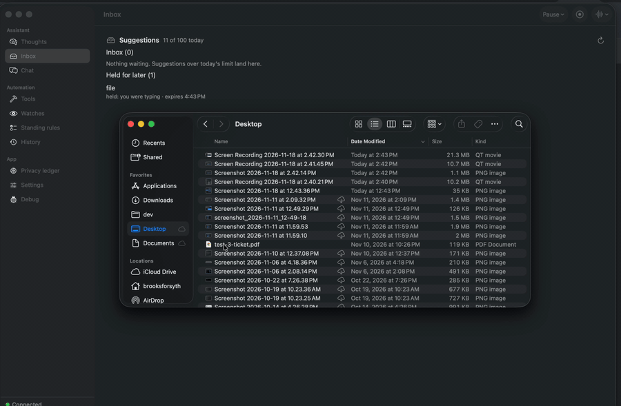

A Mac assistant that asks first.
bot-inator sits in your menu bar, notices what you're doing, and offers to help. Nothing happens until you click approve.
Free, MIT licensed. Apple Silicon, macOS 14 or later. Signed and notarized.

What it does
It watches a few things: new files in Downloads, incoming mail and iMessages, upcoming meetings, which app you're in. When something comes up it asks a model whether there's anything useful to do. If there is, you get a card. A PDF invoice lands and it offers to file it with your other invoices. You approve it or ignore it.
Every action is a card
Moving a file, making a reminder, drafting an email: all of it waits for your click. Only read-only tools skip the card.
Local by default
Models run on your Mac with MLX. A cloud key is optional, and a ledger in Settings shows everything that left the Mac today.
It writes its own tools
When you keep doing something by hand, it offers to build a small tool for it. You read the full source before it's installed.
Sandboxed and versioned
Each tool runs in a short-lived sandbox-exec child and lives in its own git repo, so a bad change can be rolled back.
Getting started
- Download the zip (about 540 MB), unzip it and move
bot-inator.appto Applications. - Open it. A setup window asks how you want to run the models.
- Pick Cloud key to try it in a couple of minutes with your own OpenAI, Anthropic, Gemini, Groq or OpenRouter key. Pick Local to keep everything on the Mac. That download is about 13 GB, or 8 GB on Macs with less than 24 GB of memory.
You can switch between them later in Settings.
Who makes it
I'm Brooks Forsyth, and I build bot-inator on my own. It's early, and some suggestions will miss. Bug reports and "it suggested something dumb" reports are both useful: open an issue on GitHub.